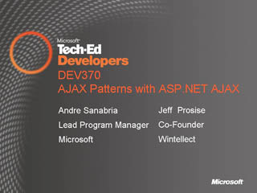

Tech Ed: Developers - Viral Marketing Video
Speaker(s): Tech Ed Developers
Windows SharePoint Services v3 and Office SharePoint Servers 2007 as Development Platform

 Speaker(s): David Gristwood
Speaker(s): David Gristwood
ASP.NET: Developer and Designer AJAX Bliss with Visual Studio and Expression
Speaker(s): Brad Abrams
Visual Studio: The .NET Language Integrated Query (LINQ) Framework Overview
Speaker(s): Anders Hejlsberg
A Lap Around the New Enhancements for Web Developers in Visual Studio Orcas
Speaker(s): Bradley Millington
C# 3.0: Future Directions in Language Innovation
Speaker(s): Anders Hejlsberg
Synchronizing Data with a Server in SQL Server 2005 Everywhere Edition
Speaker(s): Steve Lasker
Windows Presentation Foundation (WPF): Building Data-Driven Applications with WPF
Speaker(s): Ian Griffiths
Integrating the Visual Studio (VS) Team Edition for Database Professional into your Software Development Lifecycle
Speaker(s): Brian Randell
Really Simple Syndication (RSS), Podcasting, and Syndication
Speaker(s): Carl Franklin
Common Language Runtime (CLR): IronPython and .NET Scripting Languages
Speaker(s): Mahesh Prakriya
User Account Control: How to Make a Great UAC Application
Speaker(s): Chris Corio
Implementing Continuous Integration: With and Without Team System
Speaker(s): Roy Osherove
Downloads:
SDVideo(ASF)
Microsoft Dynamics from Developer's Perspective
Speaker(s): Rafal Lukawiecki
Developing Professional Solutions with Microsoft Office SharePoint Server 2007 (MOSS2007) Search
 Speaker(s): Michal Gideoni
Speaker(s): Michal Gideoni
Microsoft XNA and the Future of Game Development
Speaker(s): Rob Miles
AJAX Patterns with the Microsoft AJAX Library

Speaker(s): Jeff Prosise
Getting the Most out of Window Forms and Windows Presentation Foundation (WPF)
Speaker(s): Brad Abrams
Keynote: Windows Vista, the 2007 Office System and Ajax
Speaker(s): Eric Rudder
Downloads:
SDVideo(ASF)